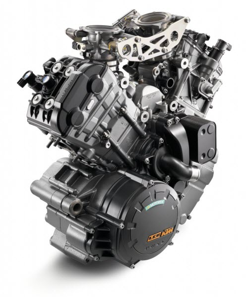

Acesta este subiectul care ma pasioneaza pe mine. Exista sunt foarte multe modele dar preferatul meu este kawasaki. Motocicleta este un vehicul motorizat cu două roți. Asemenea bicicletei, motocicleta se menține în poziție verticală cînd este virată, așa încît centrul de greutate să fie deasupra roților. Schimbarea de direcție este realizată de conducător. Ipoteza că vehiculele cu două roți stau drept datorită efectului giroscopicau fost infirmate.
Cadrul (șasiul) motocicletei este realizat prin sudură, din țevi de aluminiu sau oțel. Motocicletele moderne folosesc motorul ca structură de rezistență a șasiului. Rezervorul de combustibil este plasat de obicei deasupra motorului, întâlnindu-se însă motociclete cu rezervorul sub șa sau integrat în șasiu. Jantele pot fi spițate sau realizate în întregime din aluminiu, aliaje speciale sau fibră de carbon.
La exterior, cadrul este cel mai adesea acoperit de carene din material plastic, în întregime sau parțial.
Cea mai răspândită configurație pentru suspensia roților la motociclete constă în două amortizoare telescopice pentru roata față si un amortizor pentru bascula în care este montată roata spate. Amortizoarele sunt hidraulice sau cu gaz. Recent, acestea sunt montate cu tubul interior la capătul dinspre roată (furca "upside-down") pentru a reduce inerția ansamblului și a îmbunătăți comportamentul pe drum denivelat.
Variante mai puțin tradiționale se întâlnesc la choppere și motocicletele BMW. Sistemul telelever folosit de BMW asigură o stabilitate mai mare a motocicletei la frânare.
Funcționarea și ajustarea corectă a suspensiei este esențială pentru controlul motocicletei, în special la viraje.
În Configurațiile întâlnite sunt foarte variate: monocilindru, doi până la șase cilindri în V, doi până la patru cilindri în linie, montați transversal sau longitudinal, doi cilindri orizontali opuși, etc.general motocicletele dispun de două sisteme de frânare independente, însă în prezent mai multe motociclete oferă sisteme de frînare legate (aplicarea uneia dintre frîne o acționează și pe cealaltă) ca măsură de securitate [3][4]. Frâna roții față este acționată de un levier situat în partea dreaptă a ghidonului, iar frâna roții spate este comandată de o pedală situată lângă scărița din dreapta. Toate motocicletele moderne dispun de unul sau două discuri de frână la roata față si un disc la roata spate. Motocicletele mai vechi folosesc frâne cu tambur la roata spate. Acționarea frânelor este hidraulică in majoritatea cazurilor. La actionarea brutala a franei fata, motocicleta se ridica pe roata fata si se produce asa numitul 'stoppie';la actionarea brutala a franei spate,se produce fenomenul 'wobbling'.Oricare se produce,urmarile sant grave in majoritatea cazurilor. Frâna cea mai importantă este frâna roții față, care preia intre 70 și 100% din capacitatea de frânare pe o suprafață aderentă, datorită transferului de greutate. Proporția diferă și în funcție de tipul motocicletei.
Sisteme de tip ABS si de repartizare a forței de frânare pe cele două roți se pot întâlni din ce in ce mai des la motociclete.
Propulsia motocicletei este asigurată de un motor cu ardere internă, în doi sau patru timpi. Prototipuri și serii limitate de motociclete cu motor diesel există, dar nu sunt răspândite. Capacitatea cilindrică a motoarelor de motocicletă este situată între 50cc și 2000cc.

Motoarele în doi timpi sunt mai des întâlnite la motocicletele vechi sau la cele de performanță (un motor în doi timpi genereaza mai multă putere decât unul în patru timpi de aceeași cilindree).
Configurațiile întâlnite sunt foarte variate: monocilindru, doi până la șase cilindri în V, doi până la patru cilindri în linie, montați transversal sau longitudinal, doi cilindri orizontali opuși, etc.
Puterea dezvoltată de motor variază în funcție de tipul motocicletei, de la 3-5 CP până la peste 200 CP. Motocicletele sportive de serie, accesibile publicului larg, pot avea un raport putere/greutate supraunitar.
Ambreiajul motocicletelor este de obicei de tipul umed, cu ungere în baia de ulei sau separată. Ambreiajul de tip uscat este și el destul de raspândit. Cutia de viteze are cinci sau șase trepte de multiplicare.
Transmisia finală cea mai răspândită este cu lanț, mai rar cu cardan sau curea de transmisie.
Categoria cea mai răspândită, înglobează multe tipuri de motociclete.
Aceste motociclete sunt destinate preponderent mediului urban și au o formă clasică, generică. Acest tip de motocicletă este recomandat începătorilor, deoarece sunt manevrabile și în majoritatea cazurilor nu au motoare foarte puternice. Numele naked ale acestor motociclete vine din engleza care inseamna gol. Motocicleta prezinta caren reduse, dezvaluind cat mai mult motorul.
Motociclete destinate plimbărilor lungi, în afara orașelor. Șaua joasă, ghidonul lat și un motor de cilindree mare, optimizat pentru cuplu maxim la turații mici arată că accentul este pus în principal pe confortul motociclistului și mai putin pe performanțele sportive.
Aceste motociclete sunt optimizate pentru viteza si performante sportive, asemănătoare motocicletelor de curse din care sunt derivate. Folosesc motoare puternice de turatie mare, au carene in jurul cadrului pentru reducerea rezistenței la înaintare, frâne puternice și impun motociclistului o poziție specifică, cât mai ascuns în spatele parbrizului si carenelor.
Motociclete destinate parcurgerii unor distanțe mari. Spre deosebire de cruisere, acest tip de motociclete prezintă și caracteristicile unei motociclete sport.
Destinate în principal deplasărilor în teren accidentat. Se impart in doua categorii: cross si hard-enduro. Cele din clasa cross nu sunt dotate cu faruri,semnalizatoare și alte componente electrice, circulația lor nefiind permisă pe drumurile publice. Deși au aceiași capacitate cilindrică ca și modelele de hard-enduro puterea lor variază mult, cele de motocross având o accelerație mai rapidă dar nu au cuplu ca și o motocicletă de enduro. Atât motocicletele de motocross și hard enduro pot fi recunoscute după silueta înaltă, garda mare la sol, roata față mai mare și cauciucurile cu crampoane.
Denumite si soft-enduro sau dual sport aceste motociclete sunt un hibrid între motocicletele touring și cele enduro. Sunt adaptate atât ieșirilor în teren accidentat cât și șoselelor.
Asemănătoare motocicletelor enduro, sunt folosite în competițiile de motocross, pe trasee de pământ special amenajate cu obstacole și trambuline. Traseele de motocross pot contine si urcari si coborari lungi cat si zone cu nisip, pietris.
Motociclete foarte simple, fără cutie de viteze și frâne, dar care are ambreiaj, cu care se concurează pe piste ovale special amenajate.
Motociclete sportive de 1000cc, derivate din modele de serie puternic modificate de constructori. Această clasă oferă un bun prilej constructorilor de a prezenta modelele de serie pe care le vând.
Similar clasei superbike, motocicletele supersport sunt modele de serie de capacitate cilindrică mai mică și cu mai multe restricții asupra modificărilor ce pot fi făcute pentru a le putea înscrie în competiție.
Aceste motociclete sunt un hibrid între motocicletele de viteză pe circuit și cele de cross. Concurează pe trasee mixte de cross cu asfalt.